Meeting Minute #9
Date: 24 June 2024
Time: 9pm to 10pm
Location: Virtual, Teams Meeting
Attendees: Arya Siahaan, Seng Jing Yi, Thet Myat Noe
Agenda:
- Digesting feedback from Prof Kam on first dashboard iteration.
- Summarise the findings obtained from the plots.
- Finalise the deliverables (Shiny Plot, User Guide, Poster).
Meeting Notes:
Piecing the various plots together, we have a first iteration of our dashboard. This comprises of 5 main section, 3 of which had multiple tabs for breakdown for respective plots to address the 4 mini-challenge 2 sub-questions. Click here to access Dashboard 1.
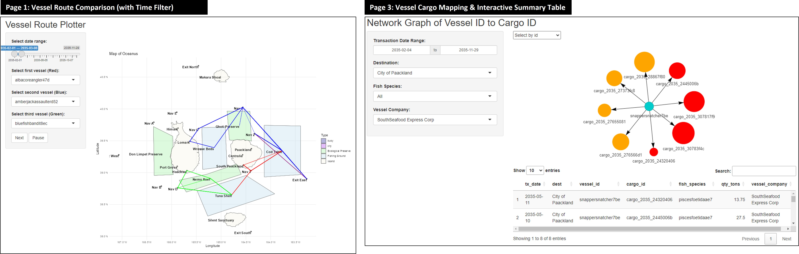
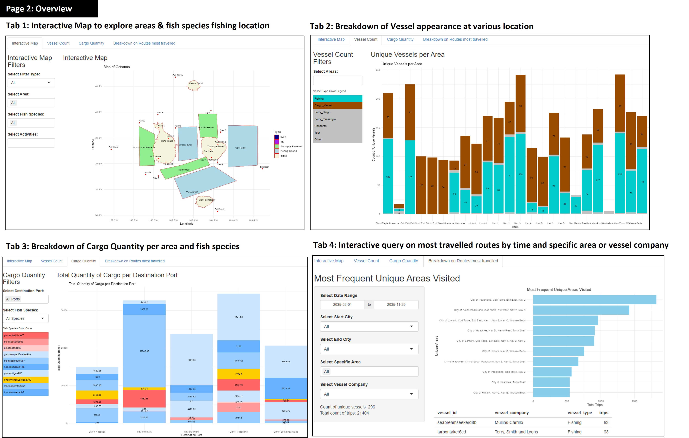
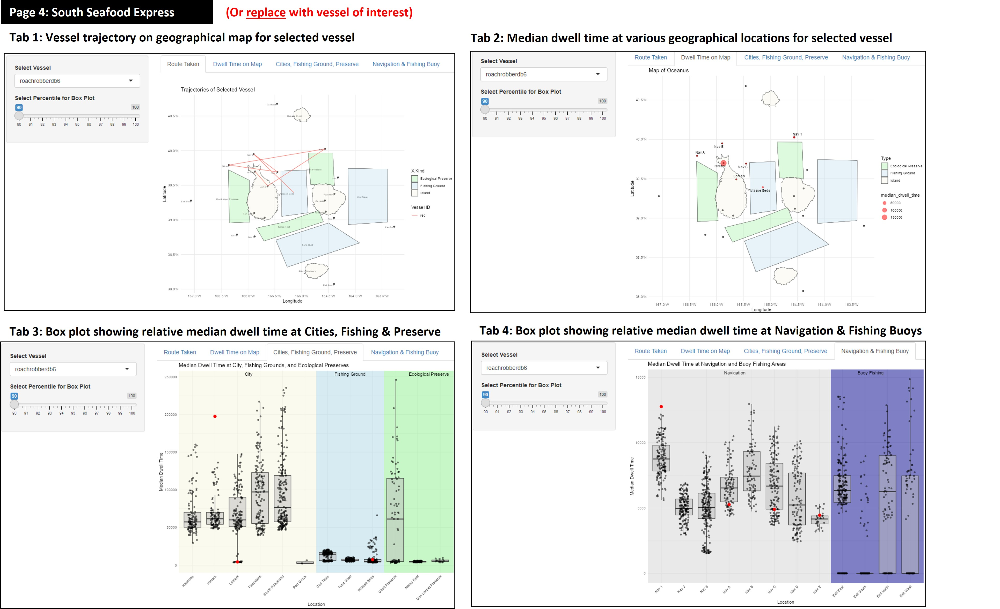
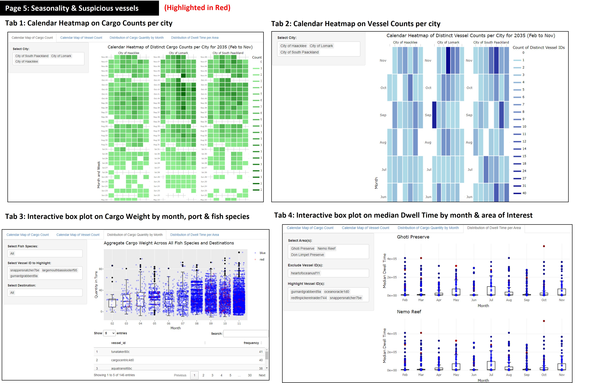
Discussion and revision based on Prof Kam’s feedback for first dashboard iteration:
During the consultation with Prof. Kam, we received valuable feedback on how to improve the visualisation on our Shiny app. Below are the main takeaways:
- Review Note 1: Incorporate
Timeas a dimension for analysing vessel trajectories.
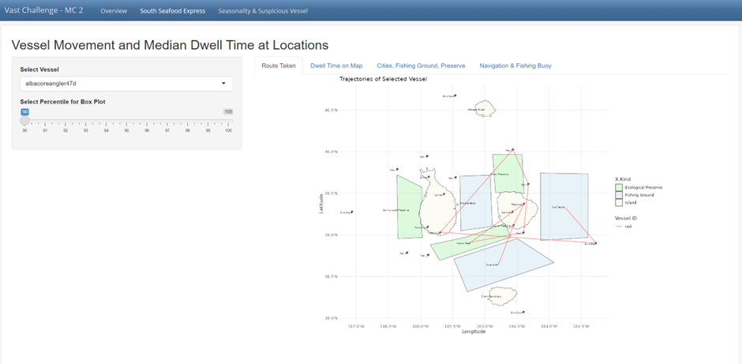
- Implement a Time Slider for to distinguish trajectories over a period of time or based on vessel’s trip
This slider will allow users to distinguish between different trips (e.g., first trip, second trip, third trip) and observe changes in vessel movement patterns over time. This functionality addresses potential duplicate visits and provides a clearer understanding of the vessel’s travel history.
- Leverage on Line Transparency and Width to highlight overlaps.
To differentiate overlapping paths, use line transparency and increase line width. This way, if a vessel travels the same path multiple times, the line will appear thicker due to the overlap. Vessels that make repeat trips between ecological preserve and certain location of interest can be further investigated.
- Vessel Trajectory Comparisons
For the vessel trajectories, incorporate a comparison between vessels belonging to SouthSeafood Express Corp and those of other companies. This should highlight behavioral similarities or differences, providing evidence of patterns. Specifically, focus on comparing the trajectories of individual vessels, such as ‘Snapper Snatcher’ and ‘Roach Robber,’ as well as the overall routes of SouthSeafood Express Corp vessels versus others at different fishing grounds.
- Review Note 2: Improving clarity on Box Plot for comparison of vessel’s dwell time.

- Box Plot Comparison:
Prof. Kam suggested we need to refine the box plots so that they can be used to compare dwell times across different vessels at each specific location. Each vessel should have its own box plot representing dwell times in various fishing areas. This can be achieved by calculating the start and end times to determine the total dwell time within each area.
- Independent Scale for Box Plots:
Ensure that the scale for the box plots is independent for each vessel to prevent the plots from being squished and to accurately reflect the data distribution
- Combining Plots:
Combine the two plots (dwell time map and dwell time box plot) within a single tab, displaying them side by side. Remove the box plots for ports and cities, and focus on fishing grounds where the primary activities occur. Emphasize dwell times at sea (fishing grounds) and compare them with other vessels to identify patterns.
- Slider Usage:
This tab does not require a slider, simplifying the interface and focusing the user’s attention on the combined visualization.
- Review Note 3: Remove plots that does not offer meaningful insights to zoom into key areas.
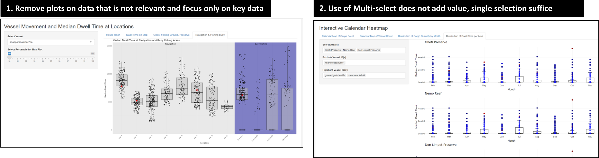
- During the consultation, Prof. Kam noted that the current plot, which compares median dwell times in navigation and buoy fishing areas, doesn’t provide clear insights or tell much of a story. The key feedback was: “This one doesn’t really tell much. What can you tell with this plot?”
- Use of multi-select does not bring value to the interactive plot as separate plots are returned. Selection of a single sample at a time would suffice, rather than having multiple select.
This prompted deep reflection for our project team to clearly identify the purpose of each plot before introducing into our Shiny App. Where a clear use case was not evident, these plots were removed to minimise distraction to users which may potentially lead to dilution of insights.
- Review Note 4: Include labels for user’s understanding on cargo-vessel mapping
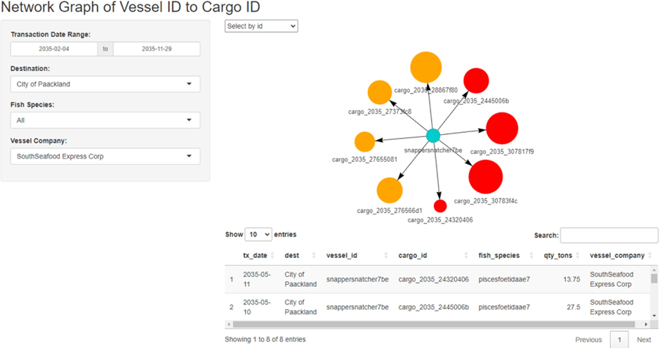
For the network graph of vessel ID to cargo ID, it is necessary to map the cargo to its contents, specifically identifying the fish species contained in each cargo.
- Review Note 5: Tidying up redundant points, filters & description to minimise distractions.
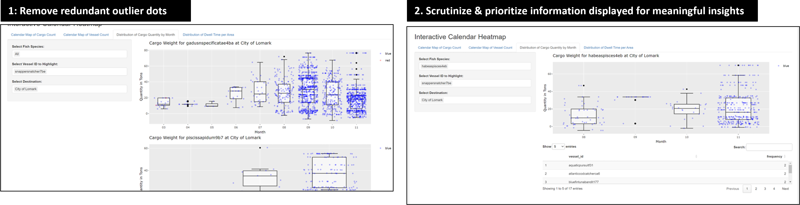
- Removing the black dot representing the outlier that is distracting and unnecessary, as the outliers are already clearly visible with the blue and red dots.
- While the breakdown of fish species in cargo over time has a good concept to identify abnormal fish species caught over time, the execution needs improvement. The vessel IDs at the bottom are confusing, as they appear to be mixed up with fish IDs. Alignment of the labels is needed to improve readability of the interactive data table below.
Revised dashboard and key take-away:
Clarity and user-centric design is key! By removing unnecessary plots that confuse users, the team is able to truly focus on 4 main plots to uncover the suspicious behaviour of vessels in Oceanus. This helped to streamline the Shiny App and focus on the most impactful and relevant visualisations.
Our team focused on including filters based on user’s interest (e.g., Slide for time period of interest for temporal analysis), and readability of plots (e.g., Standardised input based on vessel name, and returning corresponding details on vessel company).
Click here to access Revised Dashboard.
- Revised Plot 1: Routes travelled by 3 selected vessels
For Clarity:
- Comparison of 3 selected vessels on each other to highlight overlap in routes. Users can now compare SSEC vessel of “Snapper Snatcher” and “Roach Robber” in relation to vessels from other companies.
- Adjust width of trajectory line that thickens to highlight repeated travel on the same route, and distinguish suspicious routes taken at high frequency.
- “Next” button included for users to observe behaviour of vessels in 30 days interval with each click.
- Slider input for date range to filter trips made by vessel based on start and end date of interest. This allows users to explore based on specific time frames and observe changes of vessel trajectories over time.
For Aesthetics:
- Maximised size of the geo-spatial plot such that it expands to fill screen width
- Removed color legend from plot to maximise plot size, and color legend in side bar layout for readability.
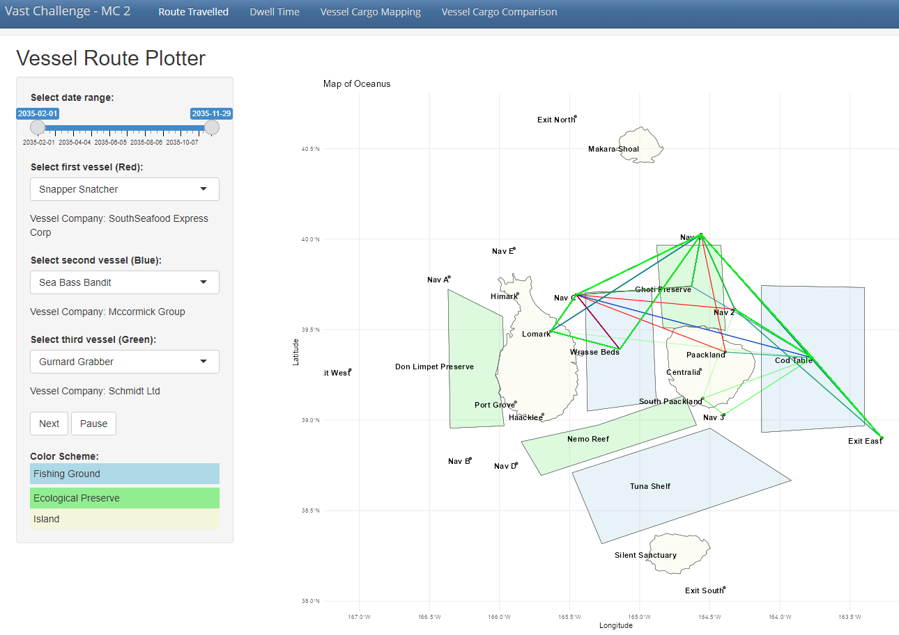
Comparing 2 other suspicious vessels (Sea Bass Bandit, Gurnard Grabber) with South Seafood Express Corp’s Snapper Snatcher, we observe repeated overlaps of vessel trajectory and repeated entry in Ghoti Preserve, Cod Table and Wrasse Beds, pointing to possible illegal fishing activities in ecological preserve and overfishing in Wrasse Beds and Cod Table.
- Revised Plot 2: Median Dwell Time
For Clarity:
- Having a side-by-side plot of dwell time on map and relative dwell time comparison with other company allows users to have a quick birds-eye view on where vessel spent their time and if it is reasonable.
- Included reference of the company which the vessel of interest belongs to under the filter.
- Focused on critical areas of Fishing grounds and ecological preserve, with green dotted line to segment these 2 groups of area. (Between Wrasse Beds, fishing ground & Ghoti Preserve, ecological preserve)
- Included interactivity to the box plot with tool tip that reveals the vessel name, company and median dwell time when hovered on.
- With
Plotly, users are able to zoom into the selected region, offering them to greater flexibility to scrutinize details of the box plot where points are previously cluttered together due to the existing scale. - Slider input for date range for users to perform temporal analysis on any changes to median dwell time relative to other vessels.
- To exclude distortion of box plot by outliers, the option of “Exclude Specific Vessel” was introduced to remove outliers and provide appropriate scale to the relevant data points.
For Aesthetics:
- Similarly, to maximise plot size, the legends are removed from the plot and included in the side bar panel for users ease of reference.
- The box plot dot size of the selected vessel is also maximised for users ease to pinpoint the selected vessel where it was previously hard to see, despite being in a different color.
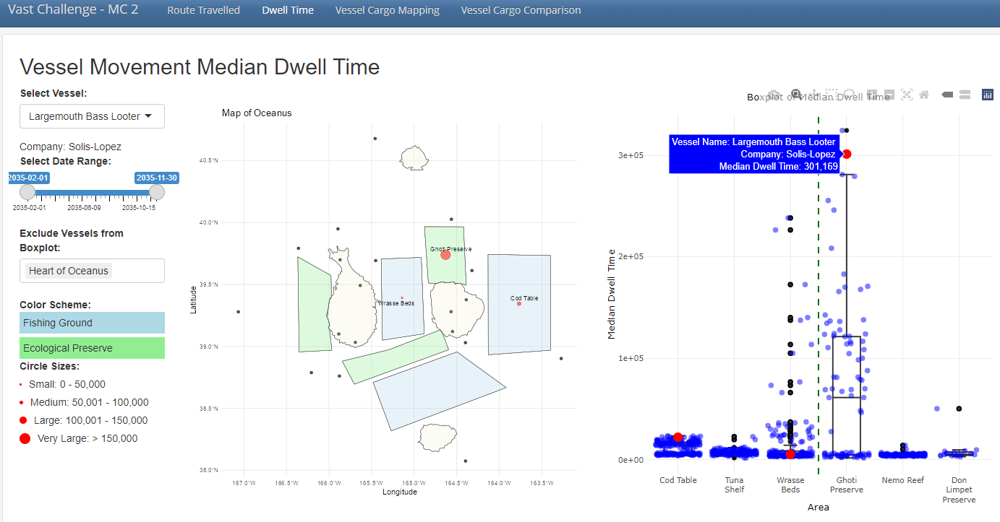
Looking at another suspicious vessel, Largemouth Bass Looter from the company of Solis-Lopez, we observed that it has much higher dwell time in ecological reserve of Ghoti Preserve and fishing ground of Cod Table, which points to potential illegal fishing in restricted areas and overfishing of Cods in Cod Table.
- Revised Plot 3: Vessel Cargo Mapping
For Clarity:
- Updated filters such that users have more option to filter by “Vessel Name” aside from the initial vessel of “Transaction Date”, “Destination”, “Fish Species” and “Vessel Company”.
- Recoded the fish species labels into readable text and concatenating the quantity for each cargo node returned.
- For the summary data table below, the columns are also updated to only retain fields of interest and renamed to a user friendly format, removing the code labels of (tx_qty, cargo_id, etc) that is not meaningful to end users.
For Aesthetics:
- Similarly, to minimise clutter in the plot itself, the color legend for fish species were removed from the plot and included in the side bar panel for ease of reference.
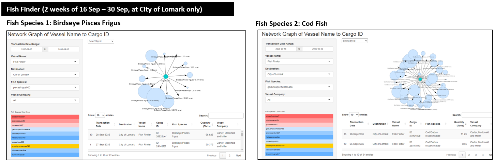
For the vessel of “Fish Finder” alone, in the 2 weeks of 16 September to 30 September at City of Lomark, we observed abnormally high quantity of cargo for some fish species. For illustration, approximately 12 cargoes of Birdseye Pisces and more than 30 cargoes of Cod Fish. This highlights possible signs of overfishing, especially where some cargos are of unusually high quantity of 50 tons and above.
- Revised Plot 4: Treemap of Vessel Cargo Comparison
- Inclusion of side-by-side comparison for various vessels and the fish species caught. The larger the area filled by the particular fish species and vessel name, it would show the relative quantity of fishes caught.
- To put into perspective the actual volume and quantity of cargo each vessel caught, a summary text is included at the bottom of the side bar to inform users on the breakdown.
- A time filter is applied to enable users to perform analysis on cargo volumes based on the same period of time, such that effects of seasonality could be minimised.

The treemap above compares the catch from Gurnard Grabber from Schmidt company and Snapper Snatcher from South Seafood Express Corp, that has similar vessel trajectories per revised plot 1. We observe that cumulatively, Gurnard Grabber has substantially higher volume of cargo caught, with striking 2,647 tons of Cod Fish, highlight possible overfishing in Cod Table.
While Snapper Snatcher has notably lesser catch, it has a notably high quantity of illegal fish species caught for Sockfish (4 cargoes, totalling to 113 tons), as highlighted in the red boxes.
Action Items:
| Action items | Owner(s) | Deadline |
|---|---|---|
| Presentation of Poster on 29 June 2024 | Arya, Jing Yi, Myat | 29 June 2024 |